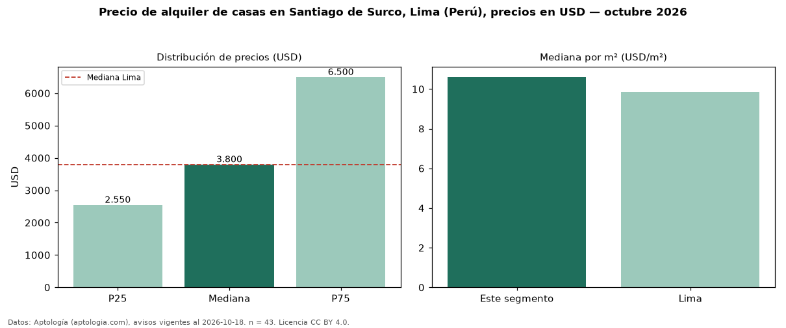

Precio de alquiler de casas en Santiago de Surco, Lima (Perú), precios en USD — octubre 2026
En Santiago de Surco, Lima (Perú), la mediana de canon mensual de casas es USD 3.800, según 43 avisos vigentes. Prácticamente coincide con la mediana de Lima para casas (USD 3.800). Por metro cuadrado, la mediana es USD 10,61/m² al mes (n = 42 avisos con área), 8 % por encima de Lima (USD 9,85/m²). Con el precio por m² de venta del mismo segmento (USD 2.100/m²), la rentabilidad bruta implícita es 6,1 % anual (aproximación con medianas de ofertas distintas). La mitad central de los avisos va de USD 2.550 a USD 6.500 (razón 2,5), una dispersión alta. El área mediana anunciada es 400 m². El segmento con más oferta es el de 3 o más habitaciones (42 avisos, mediana USD 3.750). Datos: Aptología (aptologia.com), CC BY 4.0 — https://www.aptologia.com/pe/alquiler/lima/santiago-de-surco. Archivos: PDF, CSV con las cifras y gráfica PNG.

| Avisos únicos | 43 |
|---|---|
| Percentil 25 | COP 2.550 |
| Mediana | COP 3.800 |
| Percentil 75 | COP 6.500 |
| Mediana por m² | COP 10 |
Fuente: avisos vigentes de portales inmobiliarios recopilados por Aptología, deduplicados (mínimo 30 avisos únicos por celda). Precios pedidos, no cerrados. Fecha: 2026-10-18.